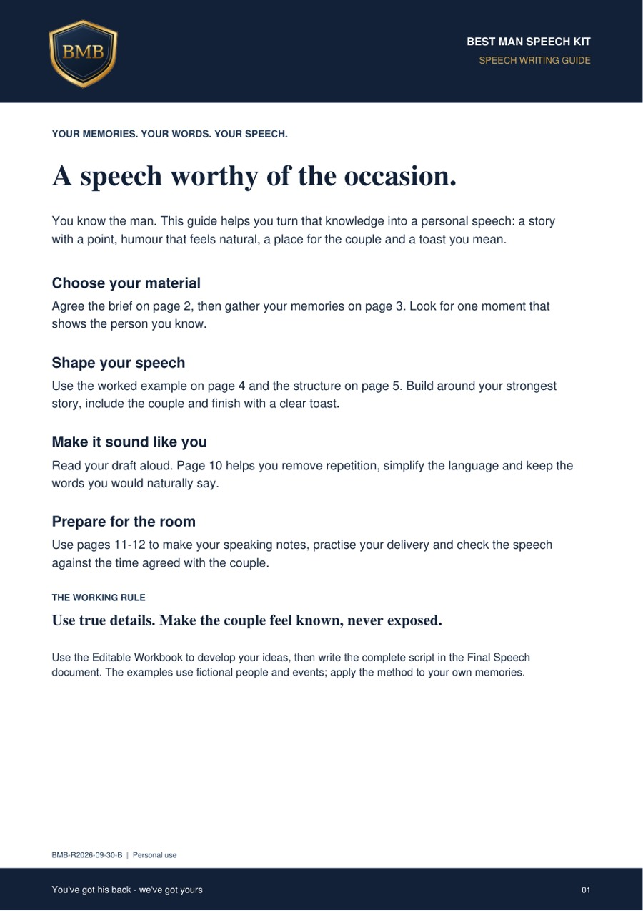
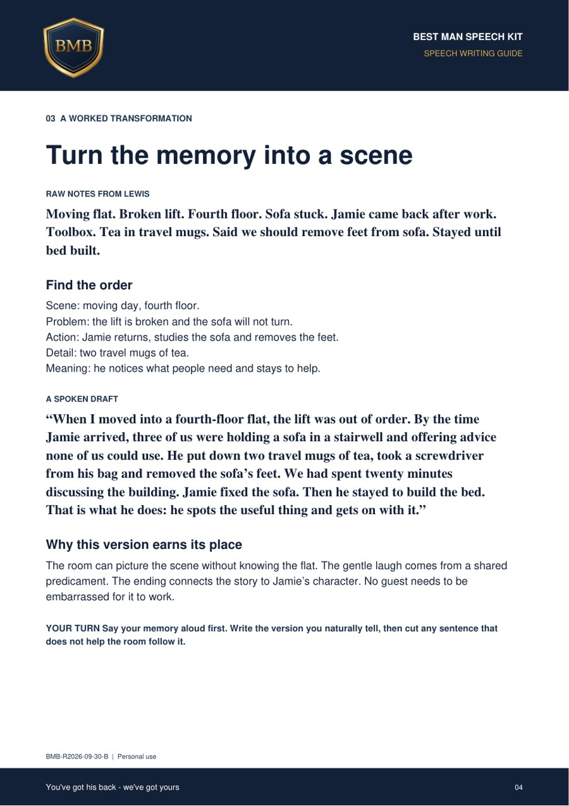
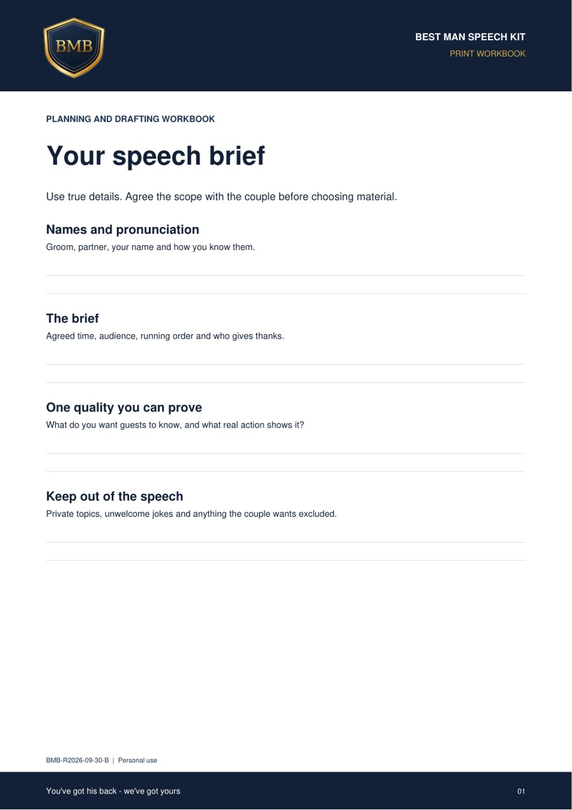
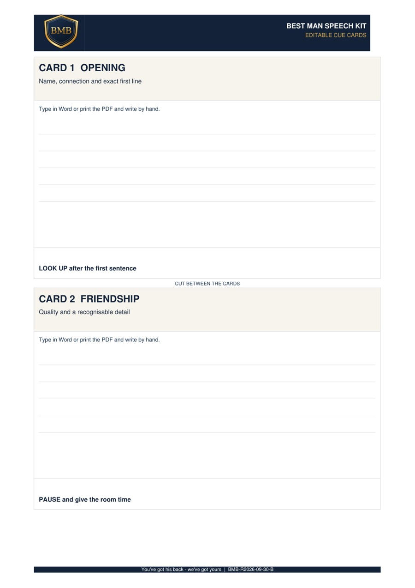
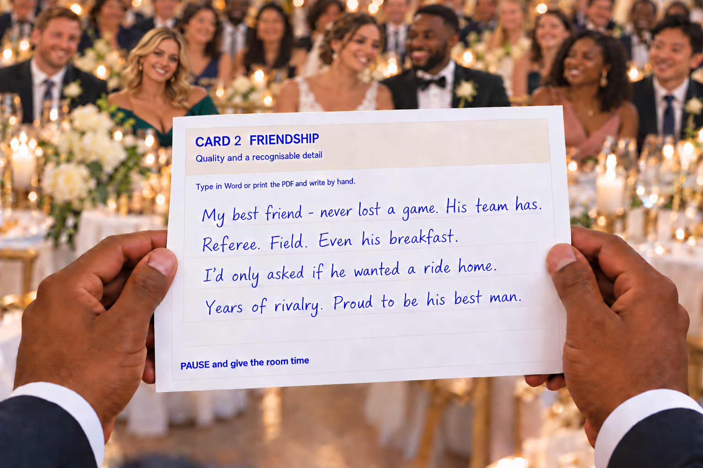

Find the story
Use guided questions to choose a real moment that shows who he is. Keep the detail that makes it yours.
GUIDE + WORKBOOKBEST MAN SPEECH KIT
You bring the memories. Best Man Backup gives you the structure, worked examples and cue cards to shape them into a speech that sounds like you - and prepare to deliver it with confidence.

YOUR DIGITALYou've got his back - we've got yours
FROM BLANK PAGE TO LAST LINE
You bring the memories. The kit helps you decide what belongs, put it into words and practise saying it aloud.
Use guided questions to choose a real moment that shows who he is. Keep the detail that makes it yours.
GUIDE + WORKBOOKBuild a clear opening, a story with a point, a warm welcome for the couple and a toast. Edit the full draft in Word.
FINAL SPEECH DOCUMENTRehearse aloud, find your rhythm and turn your speech into clear prompts on large cue cards.
CUE CARDS + REHEARSAL CHECKLISTWHAT YOU RECEIVE
These are pages from the customer files. Each document has a different job, so you know what to open next.

UNDERSTAND THE APPROACH
Structure, story selection, safer humour and examples that explain the thinking behind a strong speech.

TURN IDEAS INTO WORDS
A guided workbook for planning and a separate Word document for the complete speech you’ll rehearse.

TAKE THE RIGHT PROMPTS
Type in Word or print and write by hand. A4 and US Letter versions, with two cards per sheet.

YOUR SPEECH. AT A GLANCE.
Your best stories deserve engagement with the room. Turn your speech into short, personal prompts you can glance at as you speak.
Included in the Best Man Speech Kit. Digital files to print at home.
FROM MEMORY TO MATERIAL
The games you played. The rivalry that never quite ended. The excuses you still bring up. Start with a moment you can actually picture.
This fictional football example shows the approach: set the scene, land the joke, then give it a reason to be in the speech.
NOTES, NOT PERFECT SENTENCES
Football with my best friend. Another defeat. His excuses: referee, field, breakfast. Twenty-minute explanation. I’d only offered him a ride home. Still bringing it up years later.
Start with what happened and the detail you still laugh about. Leave the polished sentences for later.
TURN THE NOTES INTO A STORY
“My best friend has never lost a game of football. His team has. Plenty. But he’s always been very clear that those are two different things. After one defeat, he blamed the referee, the field and his breakfast. I’d only asked if he wanted a ride home.”
Pause after “Plenty.” Let the excuses build, then give the final line space.
GIVE THE TEASING A GOOD ENDING
“I’ve spent most of my life trying to beat him at something. Today, I’m just proud to stand beside him.”
The joke targets a familiar habit: having an excuse for everything. The offer of a ride home brings his grand explanation back down to earth. The short, honest ending brings it back to why you’re standing beside him.
Use a real memory of your own. Choose something he’d laugh about too, and give guests enough context to get it.
THE FILES IN ACTION
A short, silent walkthrough of the writing documents and cue cards.
PERSONAL, WITHOUT STARTING ALONE
Tell a story your friends recognise and the rest of the room can follow. Bring your humour, say what you rate about him, and include the couple.
The kit gives you structure, examples and editable documents to work with. You choose the stories and write the speech. No bespoke writing or live coaching is included.
BEFORE YOU BUY
11 files: a Start Here PDF, a 12-page speech-writing guide, an editable Word workbook, print workbooks in A4 and US Letter, a final-speech Word document, cue cards in Word and PDF for both paper sizes, and a rehearsal checklist. They arrive together in a ZIP download.
No. It’s a guide and set of working documents that help you write your own speech using your own memories. Examples show the approach; they aren’t a replacement for your story.
The workbook, final speech document and cue cards are supplied as editable Word files. The PDFs are for reading or printing; they are not fillable PDF forms. Use a compatible Word editor and check the layout before printing.
A free template or chatbot can help you draft. The kit gives you an organised process, a complete worked speech, editable writing documents, large cue cards and a rehearsal checklist in one download. You’re buying prepared guidance and usable files; your memories and judgement still make the speech personal.
No. You can work through the kit using your own memories and a Word editor. Any optional writing tool should help shape your words, not invent personal stories.
Yes. Print the PDF and write by hand, or type into the Word version first. Both A4 and US Letter versions are included, with two large cards per sheet.
No. This is a digital download. Open the Etsy listing to see the current price, full contents and purchase details.
Use Etsy’s order and download help, or contact Best Man Backup through the Etsy shop attached to your order. You’ll need to unzip the download before opening the individual Word and PDF files.
Use the guide to check the structure, story, humour and ending. Then edit the full speech document and use the rehearsal checklist and cue cards to prepare the delivery.
WHAT HAPPENS NEXT
Digital files only. A compatible Word editor is needed for the editable documents. No physical delivery, custom writing or subscription.